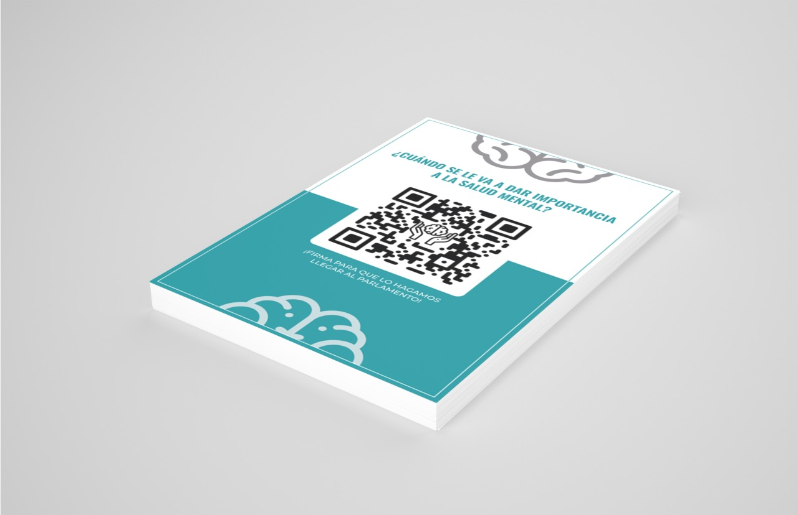

QR Flyers to Collect signatures
Flyer design created to support a signature campaign advocating for greater visibility, research, and treatment of Borderline Personality Disorder (BPD).

Overview
This volunteer project was created to support a signature collection campaign aimed at raising awareness of Borderline Personality Disorder (BPD) and encouraging further research and improvements in treatment options.
The objective was to design a flyer that could quickly communicate the purpose of the campaign and make participation as simple as possible through the use of QR codes linked directly to the petition.
Here the campaign: Collection of signatures for mental health and for the visibility, treatment and study of borderline personality disorder (BPD).
Problem & Goals
The campaign needed a simple and accessible way to encourage people to sign the petition online.
The main challenge was presenting enough information to explain the cause without overwhelming viewers, while ensuring that the call to action remained immediately visible.
The idea was to distribute these flyers and also hang them on the bulletin boards of some schools.
The primary goals were:
• Increase the number of petition signatures.
• Create a flyer that could be easily shared both digitally and in print.
• Make participation quick and accessible through QR code integration.
Process
Research & Observation
Before creating the flyer, I reviewed examples of awareness campaigns, fundraising materials, and public petitions to understand how they communicated information effectively.
The final layout prioritizes clarity, allowing viewers to quickly understand the purpose of the campaign and access the petition with minimal effort.
Final Outcome
The final flyer was distributed to help promote the campaign and facilitate the collection of signatures through a direct QR code link.
By simplifying access to the petition and presenting the information in a clear format, the design supported the campaign's outreach efforts while helping raise awareness about BPD and mental health research.
Reflection
This project reminded me that design can be valuable even on a small scale. While the deliverable was relatively simple, the goal behind it was meaningful.
It reinforced the importance of clarity and accessibility when designing materials intended to encourage action, as every design decision directly affected how easily people could participate in the campaign.